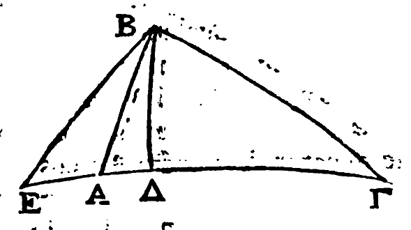
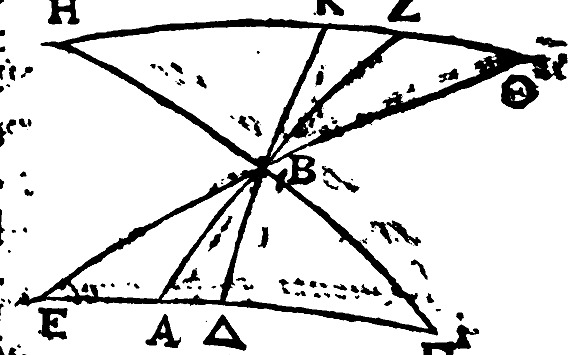

Proposition III.8 — De Sectione Harmonica Sphaerica (Latin)¶
Menelai Alexandrini Sphaericorum Lib. III Prop. VIII. Theor. (Halley 1758, pp. 93–95)
Prop. VIII. Theor. (Halley 1758, pp. 93–95)¶
Enuntiatio (Halley 1758, p. 93)
Si ab angulo recto trianguli Sphaerici rectanguli, ducantur ad basim duo arcus continentes cum altero laterum ejus angulos aequales: erit sinus arcus compositi ex basi & arcu eidem adjuncto, ad sinum ipsius arcus adjuncti, ut sinus segmenti basis quod adjacet reliquo trianguli lateri, ad sinum alterius segmenti basis: & è contra.
[§4.2 · Demonstratio & Conversae, pp. 93–95] Sit ΑΒΓ triangulum Sphaericum habens angulum Β rectum, & de puncto Β ducantur duo arcus ad basim, ut ΒΔ, ΒΕ, qui contineant cum arcu ΑΒ angulos aequales: dico sinum arcus ΓΕ esse ad sinum arcus ΑΕ sicut sinus arcus ΓΔ ad sinum arcus ΔΑ (sectio harmonica).
Quoniam enim angulus ΑΒΓ est rectus, angulus vero ΑΒΔ aequalis angulo ΑΒΕ, dividet arcus ΒΓ angulum qui deinceps est angulo ΕΒΔ bifariam; quare (per 6tam III hujus) sinus arcus ΒΕ est ad sinum arcus ΒΔ ut sinus arcus ΕΓ ad sinum arcus ΓΔ; & (per eandem) ut sinus arcus ΕΑ ad sinum arcus ΑΔ: sinus igitur arcus ΕΓ est ad sinum arcus ΓΔ sicut sinus arcus ΕΑ ad sinum arcus ΑΔ; & permutando, sinus arcus ΓΕ est ad sinum arcus ΕΑ ut sinus arcus ΓΔ ad sinum arcus ΔΑ. Q. E. D.




Ponatur jam sinum arcus ΓΕ esse ad sinum arcus ΕΑ sicut sinus arcus ΓΔ ad sinum arcus ΔΑ, & simul angulum ΕΒΑ aequalem esse angulo ΑΒΔ: dico angulum ΑΒΓ rectum esse. Nam cum arcus ΒΑ dividat angulum ΕΒΔ bifariam, erit (per 6tam III) sinus arcus ΒΕ ad sinum arcus ΒΔ ut sinus arcus ΕΑ ad sinum arcus ΑΔ, hoc est ut sinus arcus ΓΕ ad sinum arcus ΓΔ: quare arcus ΒΓ dividit angulum qui deinceps est angulo ΕΒΔ bifariam; unde duo anguli qui ad Β simul sumpti aequales sunt duobus rectis, & angulus ΑΒΓ est rectus. Q. E. D.
Ponatur rursus sinum arcus ΓΕ esse ad sinum arcus ΕΑ sicut sinus arcus ΓΔ ad sinum arcus ΔΑ, angulo ΑΒΓ existente recto: dico angulum ΕΒΑ aequalem esse angulo ΑΒΔ. Eodem enim modo constabit arcum ΒΑ bisecare angulum ΕΒΔ. Q. E. D.